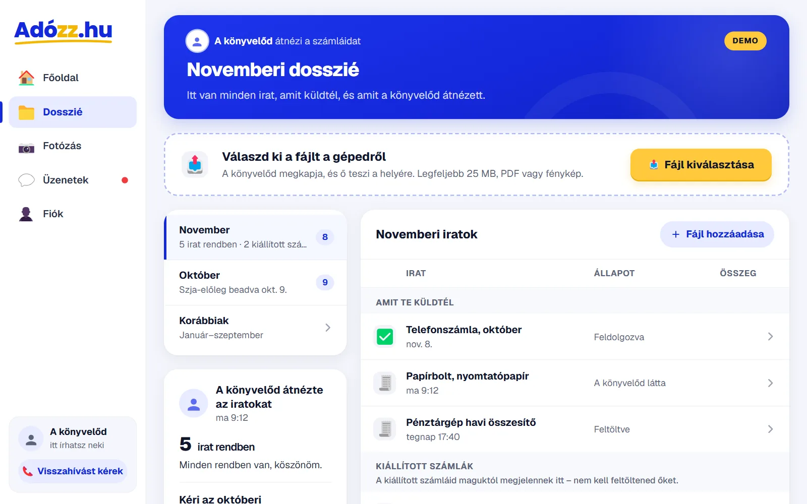
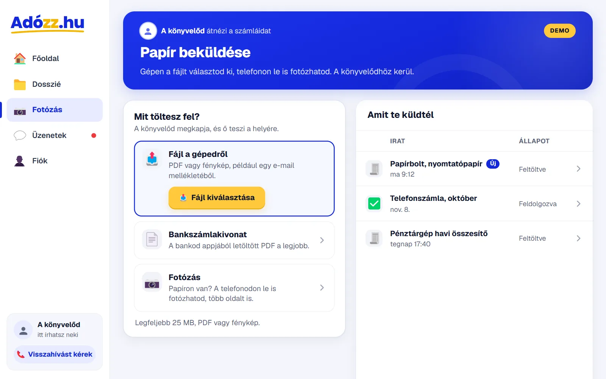
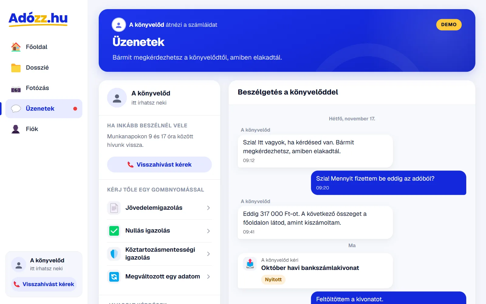
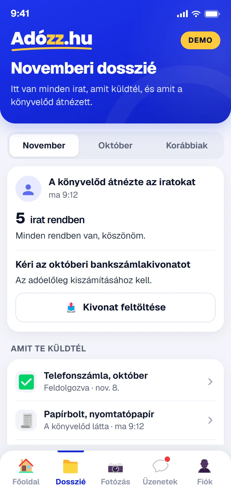
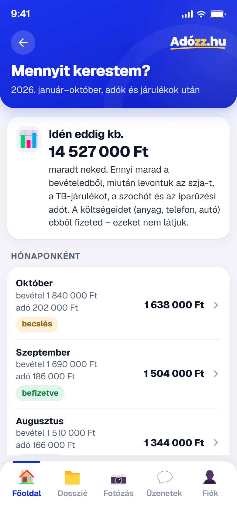

Online könyvelés egyéni vállalkozóknak, akkor is, ha most indulsz
Saját könyvelő átalányadózóknak és katásoknak
Nyilvántartásba vett könyvelő intézi a bevallásaidat és a NAV-os ügyeidet. Te közben az appban látod, mennyit tegyél félre adóra, és mikor mit kell befizetned.
{{ar:havidij}} Ft/hó bruttó · éves zárás {{ar:eves_zaras}} Ft/év · a többi díj
Regisztrálni kártya nélkül tudsz. Hűségidő nincs.








Röviden rólunk
Nyilvántartásba vett könyvelő
A neve a szerződésedben és az appban is ott van.
NAV-meghatalmazással
A NAV online felületén (ONYA) adod meg, és ugyanott bármikor visszavonhatod.
Előre kiírt árak
Havi {{ar:havidij}} Ft bruttó. A külön díjakat is előre látod az appban.
Nincs hűségidő
Bármikor lemondhatod. A kifizetett hónap végéig minden működik.
Átalányadózó és katás egyéni vállalkozókat könyvelünk
Csak alanyi áfamentes vállalkozókkal dolgozunk. Ezért lehet mindenkinek ugyanaz az előre kiírt ár.
Neked szól, ha
- átalányadózó vagy katás egyéni vállalkozó vagy,
- alanyi áfamentes vagy, vagyis nem számolsz fel áfát (2026-ban évi 20 millió Ft bevételig, ha év közben indulsz, arányosan kevesebbig),
- alkalmazottad vagy alkalmi munkásod is lehet: a bérszámfejtést felárért vállaljuk,
- vagy most indítod a vállalkozásodat. Ebben is segítünk.
Most nem neked szól, ha
- tételes költségelszámolással (vállalkozói szja-val) adózol,
- áfakörbe tartozol,
- Kft.-d vagy Bt.-d van.
Ha év közben ide kerülsz, szólunk, és megbeszéljük, mi legyen.
Így indul a könyvelésed
Regisztrálni kártya nélkül tudsz. Hűségidő nincs.
-
1
Regisztrálsz
Megadod az e-mail-címedet, és válaszolsz pár kérdésre a vállalkozásodról.
-
2
Szerződés és NAV-meghatalmazás
Elfogadod a szerződést. A meghatalmazást a könyvelőd is beküldheti, neked csak jóvá kell hagynod.
-
3
Átbeszéljük, ha szeretnéd
Az appban kérhetsz visszahívást. Fizetni csak utána kell, bankkártyával.
-
4
Indul a könyvelés
A könyvelőd elkezdi a könyvelésedet. Innentől a számláid az appban vannak.
Mindig látod, mennyit tegyél félre adóra
A számolást és a bevallást a könyvelőd csinálja helyetted.
-
Számlák
A kiállított számláid maguktól bejönnek
Az app a NAV Online Számla rendszeréből hozza be őket, nem kell begépelned. Minden számla mellett látod, nagyjából mennyit tegyél félre belőle adóra.

-
Félretenni
Egy szám mutatja, mennyit tegyél félre
A főoldalon látod, mennyit tegyél félre adóra és járulékra, és ez minden új számlával frissül. Ha félretetted, megjelölöd. A pénz közben nálad marad.
-
Határidők
Határidő előtt szólunk
Az appban ott az összeg, a NAV-számlaszám és a közlemény. Egy koppintással kimásolod őket a bankodba, az utalást te indítod. Katásként ugyanígy a havi katát.

-
Fotózás
A papírszámlát elég lefotóznod
A nyugtát vagy a kézzel írt számlát lefotózod, vagy feltöltöd PDF-ben. Egyenesen a könyvelődhöz kerül, nem kell papírt hordanod.
-
Dosszié
Amit küldesz, a könyvelőd átnézi
A havi dossziéban egy helyen van minden irat. Látod, mit nézett már át a könyvelőd, és mit kér még tőled.
-
Üzenetek
Bármikor írhatsz a könyvelődnek
Üzenetet küldesz neki az appban, igazolást pedig egy gombbal kérsz. Ha elakadsz, visszahívást is kérhetsz.

-
Keretek
Nem csúszol bele véletlenül az áfába
Az app mutatja, mennyit számlázhatsz még idén áfa nélkül, katásként a kata-keretedet is. Azt is látod, mennyi maradt neked az adók és járulékok után.

-
Böngészőben
Gépen is ugyanez
Böngészőből is megnyitod, ugyanazzal a belépéssel. Ugyanazt látod, mint a telefonodon, és a papírokat a gépedről is feltöltheted.
Az app képei bemutató adatokkal és az app új, bevezetés alatt álló kinézetével készültek. Gépen az app ma még telefonos elrendezésben nyílik meg.
Ki könyvel neked?
Egy nyilvántartásba vett könyvelő. A neve és a nyilvántartási száma benne van a szerződésedben, és az appban is megtalálod.
A szerződést a {{ceg:legalName}}-vel kötöd, a könyvelőd a mi megbízásunkból dolgozik neked.
Ezt csinálja a könyvelőd egy negyedévben
- Minden hónapban
- Vezeti a bevételi nyilvántartásodat, és átnézi a számláidat. Ha valami hiányzik, szól. A bankszámlakivonatodat is elkéri, mert abból látja, mikor érkezett meg a pénz.
- A negyedév végén
- Kiszámolja és bevallja a negyedéves adódat és járulékaidat, és az appban megírja, mennyit utalj.
- Amikor utaltál
- A feltöltött kivonatodon látja, hogy megérkezett a befizetésed, és az appban jelzi neked.
- Ha NAV-levél jön
- Elmondja, mit jelent, és a meghatalmazásod alapján elintézi.
- Katásként
- A havi katát és a kata-keretedet is figyeli.
Mit jelent a meghatalmazás, és hol vannak az adataid?
Ha valaki a nevünkben keres
Telefonon soha nem kérjük el a kártyaadataidat, és sehol nem kérjük el a jelszavadat, az Ügyfélkapu+- vagy DÁP-belépésedet vagy a kódjaidat. Ha valaki a nevünkben mégis ilyet kér, tedd le, és írj nekünk: {{email}}
A NAV-meghatalmazás
- Ezzel a könyvelőd a nevedben beadhatja a bevallásaidat, és intézheti az adóügyeidet a NAV-nál.
- A NAV online felületén (ONYA) adod meg. A könyvelőd is beküldheti, ilyenkor te hagyod jóvá.
- Bármikor visszavonhatod, ugyanott.
- Az app semmit nem küld be a NAV-nak. A bevallást a könyvelőd adja be, miután átnézte.
Az adataid
- Az Európai Unióban tároljuk őket (a szerverünk Németországban van), minden fájlt külön titkosítva.
- A könyvelési irataidat a könyvelőd kezeli. Rajta kívül csak a cégünk vezetése férhet hozzájuk, naplózva.
- {{adat_suti_mondat}}
- Bármikor letöltheted őket, és kérheted a törlésüket. Amit a törvény miatt meg kell őriznünk, azt a határidőig elzárva tartjuk.
Mennyibe kerül?
A havidíjhoz évente egyszer jön hozzá az éves zárás. A többi díj is itt van. Ami egyedi, arra előre, írásban adunk ajánlatot.
Havonta előre fizetsz, bankkártyával. Hűségidő nincs: ha lemondod, a kifizetett hónap végéig minden működik. Minden ár bruttó, 27% áfával, a részleteket az ÁSZF-ben találod.
Havidíj
{{ar:havidij}} Ft / hó
bruttó, 27% áfával
Egy teljes év az éves zárással együtt: {{ev_osszesen}} Ft
Benne van
- Saját, név szerint ismert könyvelő
- Bevételi nyilvántartás a NAV Online Számlából
- Átalányadózóként: a negyedéves adód és járulékaid kiszámítása és bevallása (szja-előleg, tb-járulék, szocho)
- Katásként: a havi kata és a kata-keret figyelése
- Mennyit tegyél félre, számlánként
- Határidő-figyelés és emlékeztetők
- NAV-ügyek meghatalmazással, NAV-levelek értelmezése
- Igazolások kérése
- Üzenetek a könyvelődnek, visszahívás igény szerint
- Ha most indulsz: segítség a vállalkozásod elindításához
Szja-előleg: a jövedelemadód negyedéves része. Tb-járulék: társadalombiztosítási járulék, ez ad jogot a nyugdíjra és az egészségügyi ellátásra. Szocho: szociális hozzájárulási adó, ezt is a jövedelmed után fizeted. Katásként ezek helyett a havi katát fizeted.
RegisztrálokRegisztrálni kártya nélkül tudsz.
Külön díjak
Az éves zárást akkor fizeted, ha az éves bevallásodat mi adjuk be. A többi díj csak akkor jár, ha te kéred a munkát. Mindet előre látod az appban, és a jóváhagyásod nélkül nem kérjük.
- Éves zárás évente egyszerAz éves adóbevallások: szja vagy kata, és iparűzési adó.
- {{ar:eves_zaras}} Ft/ {{egyseg:eves_zaras}}
- Változás bejelentése helyettedKöltözés, új tevékenység, telephely. Ha magad jelented be az útmutatónkkal: 0 Ft.
- {{ar:valtozas_egyszeru}} Ft/ {{egyseg:valtozas_egyszeru}}
- Jogállás-változás bejelentése helyettedHa főállásból mellékállásba váltasz, vagy fordítva.
- {{ar:valtozas_jogallas}} Ft/ {{egyseg:valtozas_jogallas}}
- Amíg szünetel a vállalkozásodIlyenkor a havidíj helyett csak ennyit fizetsz.
- {{ar:szuneteltetesi_dij}} Ft/ {{egyseg:szuneteltetesi_dij}}
- A vállalkozásod megszüntetése helyettedHa magad jelented be az útmutatónkkal: 0 Ft.
- {{ar:megszuntetes}} Ft/ {{egyseg:megszuntetes}}
- BérszámfejtésHa alkalmazottat vagy alkalmi munkást foglalkoztatsz.
- egyedi ajánlat
Szintén egyedi ajánlattal, előre és írásban: áfabevallás, képviselet NAV-ellenőrzésnél, korábbi évek rendbetétele.
Miben más, mint egy hagyományos könyvelőiroda?
Ha személyesen szeretnél leülni a könyvelőddel, egy hagyományos iroda jobb neked. Ha inkább a telefonodról intéznéd, nézd meg, miben más nálunk.
| Szempont | Adózz | Hagyományos iroda |
|---|---|---|
| Ár | {{ar:havidij}} Ft/hó bruttó, a díjak kiírva ezen az oldalon | Irodánként eltér, sokszor egyedi ajánlat alapján |
| Könyvelő | Nyilvántartásba vett könyvelő, név szerint | Nyilvántartásba vett könyvelő |
| Mennyit tegyél félre | Az appban, számlánként, folyamatosan látod | Általában akkor tudod meg, amikor a könyvelő kiszámolja |
| Iratok | A kiállított számláid a NAV Online Számlából jönnek, a többit lefotózod | Irodánként eltér: papíron, e-mailben vagy online |
| Kapcsolat | Üzenet az appban és visszahívás | E-mail, telefon, sokszor személyesen is |
| Személyes találkozó | Nincs, minden online megy | Általában lehetséges |
| Hűségidő | Nincs, bármikor lemondhatod | Szerződéstől függ |
A hagyományos irodák gyakorlata eltérő. A jobb oszlop általános tapasztalatot mutat, nem egy konkrét irodát.
Gyakori kérdések
Nem találod a választ? Írj nekünk: {{email}}
Kinek szól az Adózz?
Magyarországon nyilvántartott, alanyi áfamentes egyéni vállalkozóknak, akik átalányadóval vagy katával adóznak. Ha alkalmazottad vagy alkalmi munkásod is van, a bérszámfejtést felárért, egyedi ajánlat alapján vállaljuk. Ha év közben megváltozik az adózásod, vagy elveszíted az áfamentességet, szólunk, és együtt megnézzük, mi a teendő.
Katás vagyok. Nekem is jó?
Igen, ugyanennyiért. Az app figyeli a kata-keretedet, és szól, ha cégnek számlázol, mert ha egy cég fizet neked, megszűnhet a katád. Ha át kell állnod átalányadóra, ebben is segítünk.
Mi van benne a havidíjban, és mi kerül külön?
A havidíjban benne van a könyvelőd munkája, a negyedéves bevallások, a határidők figyelése, az igazolások kérése és az app minden funkciója. Külön díjas az éves zárás (évente egyszer), a helyetted intézett változás vagy megszüntetés, és a szünetelés idejére járó kisebb díj. A pontos lista az Árak résznél van.
Az adót is ti fizetitek be?
Nem, az utalást mindig te indítod, a saját bankodból. Mi megmondjuk, mennyit, mikorra és melyik NAV-számlára utalj. A számládról pénzt nem vonunk le.
Mi az a NAV-meghatalmazás, és visszavonható?
Ezzel a könyvelőd a nevedben adhatja be a bevallásaidat, és intézheti az adóügyeidet a NAV-nál. A NAV online felületén (ONYA) adod meg, vagy a könyvelőd küldi be, és te jóváhagyod. Ugyanott bármikor visszavonhatod. A belépési adataidat ehhez sem kérjük el.
Hol vannak az adataim, és ki látja őket?
Az Európai Unióban (a szerverünk Németországban van), titkosítva. A könyvelési irataidat a könyvelőd kezeli; rajta kívül csak a cégünk vezetése férhet hozzájuk, naplózva. Ügyfélszolgálatunk csak azt látja, ami az induláshoz és a visszahíváshoz kell. Az adataidat nem adjuk el. Részletek az Adatkezelési tájékoztatóban.
Miért nincs próbaidő? Mikor kell fizetni?
A havidíjért egy könyvelő dolgozik a vállalkozásodon, ezért ingyenes időszakot nem tudunk adni. Regisztrálni kártya nélkül tudsz. Ha szeretnéd, előbb visszahívunk, átbeszélünk mindent, és csak utána fizetsz, bankkártyával. A havidíj az első fizetéssel indul, akkor is, ha még nincs bevételed.
Hogyan mondhatom fel?
Bármikor, az appban (Fiók > Előfizetés > Lemondás) vagy e-mailben. A lemondás a kifizetett hónap végén lép életbe, addig minden ugyanúgy működik, utána több díjat nem kérünk.
Mi kell az induláshoz?
Egy e-mail-cím, a vállalkozásod adatai, egy személyazonosító okmány (a törvény előírja, hogy azonosítsuk az ügyfeleinket), és egy állami belépés: Ügyfélkapu+ (felhasználónév, jelszó és egy egyszer használatos kód) vagy DÁP (a Digitális Állampolgár alkalmazás a telefonodon). Ezzel adod meg vagy hagyod jóvá a NAV-meghatalmazást. Ha még a régi Ügyfélkapud van, előbb válts Ügyfélkapu+-ra az ugyfelkapu.gov.hu oldalon. Ha nincs ilyen belépésed, a visszahívásban megmutatjuk, hogyan szerezhetsz.
Hogyan váltok a régi könyvelőmtől?
Az appban megadod az eddigi könyvelődet, és szólsz neki, hogy váltasz. A könyvelőd felveszi vele a kapcsolatot az idei adatokért, hogy ne maradjon ki semmi, és semmit ne adjunk be kétszer. Azt, hogy melyik negyedévtől viszi a könyvelésedet, megbeszéli veled. A régi meghatalmazást csak akkor vond vissza, ha a könyvelőd szól.
Még nincs vállalkozásom. Segítetek elindítani?
Igen. Olyan útmutatót kapsz, ami a te helyzetedre szól, képekkel és videóval. A bejelentést te küldöd be, és mi átnézzük a NAV-os értesítést. Ha elakadsz, 2026 végéig kérheted, hogy a könyvelőd intézze helyetted, meghatalmazottként (2027-től a nyilvántartást a gazdasági kamara vezeti). Ez is benne van a havidíjban.
Legyen saját könyvelőd
Regisztrálj, és válaszolj pár kérdésre a vállalkozásodról.
RegisztrálokHavi {{ar:havidij}} Ft bruttó, hűségidő nélkül.
Előbb beszélnél velünk?
A visszahíváshoz előbb regisztrálsz: a neved, az e-mail-címed és egy jelszó kell, kártya nem. Az e-mailben kapott kód beírása után a visszahívás lapja nyílik meg. A csapatunk 24–48 órán belül visszahív, munkanapokon 9 és 17 óra között. A visszahívás ingyenes, és nélküle is elindulhatsz.
Regisztrálok, és visszahívást kérekKérdésed van a regisztráció előtt? Írj nekünk: {{email}}